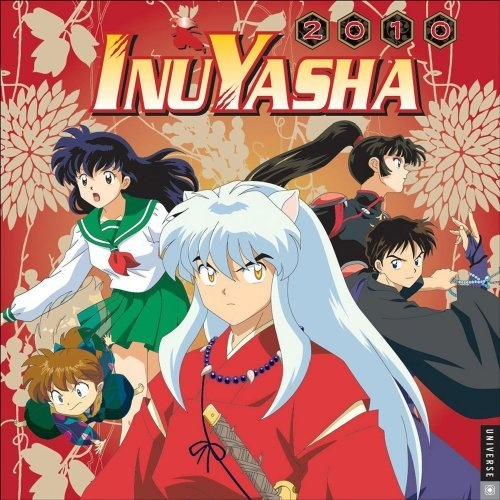

Jujutsu Kaisen

The Seven Deadly Sins

Inuyasha
🌟 Sobre o Projeto
Lendas Entrelaçadas é uma jornada que reúne três mundos épicos, cada um marcado por batalhas intensas, personagens marcantes e histórias que atravessam gerações. Esta página foi criada para apresentar brevemente esses universos e convidar você a explorá-los individualmente.
📌 Os Três Mundos
✨ Jujutsu Kaisen: Um mundo moderno assombrado por Maldições e energizado por feiticeiros capazes de manipular energia amaldiçoada. Uma história marcada por ação frenética, questionamentos profundos e personagens inesquecíveis.
⚔️ The Seven Deadly Sins: Uma aventura medieval repleta de cavaleiros lendários, criaturas mágicas e batalhas épicas. Liderados por Meliodas, os Pecados Capitais mostram que até os heróis mais poderosos carregam segredos.
🐾 Inuyasha: Uma jornada entre o mundo moderno e o Japão feudal, onde humanos e yokais convivem em um cenário cheio de magia, emoção e laços que desafiam o tempo.
🚀 Explore Mais!
Clique nos cards abaixo para mergulhar em cada universo, descobrir histórias, personagens e momentos marcantes que fizeram desses animes verdadeiras lendas.